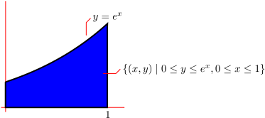
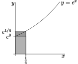
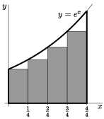
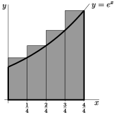
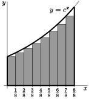

Subsection 1.1.1 A Motivating Example
Let us find the area under the curve \(y=e^x\) (and above the \(x\)-axis) for \(0\le x\le 1\text{.}\) That is, the area of \(\big\{\ (x,y)\ \big|\ 0\le y\le e^x\text{,}\) \(0\le x\le 1\ \big\}\text{.}\)

This area is equal to the “definite integral”
\begin{align*}
\text{Area} &= \int_0^1 e^x \dee{x}
\end{align*}
Do not worry about this notation or terminology just yet. We discuss it at length below. In different applications this quantity will have different interpretations — not just area. For example, if \(x\) is time and \(e^x\) is your velocity at time \(x\text{,}\) then we'll see later (in Example 1.1.18) that the specified area is the net distance travelled between time \(0\) and time \(1\text{.}\) After we finish with the example, we'll mimic it to give a general definition of the integral \(\int_a^b f(x) \dee{x}\text{.}\)
We wish to compute the area of \(\big\{\ (x,y)\ \big|\ 0\le y\le e^x\text{,}\) \(0\le x\le 1\ \big\}\text{.}\) We know, from our experience with \(e^x\) in differential calculus, that the curve \(y=e^x\) is not easily written in terms of other simpler functions, so it is very unlikely that we would be able to write the area as a combination of simpler geometric objects such as triangles, rectangles or circles.
So rather than trying to write down the area exactly, our strategy is to approximate the area and then make our approximation more and more precise 1 This should remind the reader of the approach taken to compute the slope of a tangent line way way back at the start of differential calculus.. We choose 2 Approximating the area in this way leads to a definition of integration that is called Riemann integration. This is the most commonly used approach to integration. However we could also approximate the area by using long thin horizontal strips. This leads to a definition of integration that is called Lebesgue integration. We will not be covering Lebesgue integration in these notes. to approximate the area as a union of a large number of tall thin (vertical) rectangles. As we take more and more rectangles we get better and better approximations. Taking the limit as the number of rectangles goes to infinity gives the exact area 3 If we want to be more careful here, we should construct two approximations, one that is always a little smaller than the desired area and one that is a little larger. We can then take a limit using the Squeeze Theorem and arrive at the exact area. More on this later..
As a warm up exercise, we'll now just use four rectangles. In Example 1.1.2, below, we'll consider an arbitrary number of rectangles and then take the limit as the number of rectangles goes to infinity. So
- subdivide the interval \(0\le x\le 1\) into \(4\) equal subintervals each of width \(\frac{1}{4}\text{,}\) and
- subdivide the area of interest into four corresponding vertical strips, as in the figure below.
The area we want is exactly the sum of the areas of all four strips.
Each of these strips is almost, but not quite, a rectangle. While the bottom and sides are fine (the sides are at right-angles to the base), the top of the strip is not horizontal. This is where we must start to approximate. We can replace each strip by a rectangle by just levelling off the top. But now we have to make a choice — at what height do we level off the top?
Consider, for example, the leftmost strip. On this strip, \(x\) runs from \(0\) to \(\frac{1}{4}\text{.}\) As \(x\) runs from \(0\) to \(\frac{1}{4}\text{,}\) the height \(y\) runs from \(e^0\) to \(e^{\frac{1}{4}}\text{.}\) It would be reasonable to choose the height of the approximating rectangle to be somewhere between \(e^0\) and \(e^{\frac{1}{4}}\text{.}\) Which

height should we choose? Well, actually it doesn't matter. When we eventually take the limit of infinitely many approximating rectangles all of those different choices give exactly the same final answer. We'll say more about this later.
In this example we'll do two sample computations.
-
For the first computation we approximate each slice by a rectangle whose height is the height of the left hand side of the slice.
- On the first slice, \(x\) runs from \(0\) to \(\frac{1}{4}\text{,}\) and the height \(y\) runs from \(e^0\text{,}\) on the left hand side, to \(e^{\frac{1}{4}}\text{,}\) on the right hand side.
- So we approximate the first slice by the rectangle of height \(e^0\) and width \(\frac{1}{4}\text{,}\) and hence of area \(\frac{1}{4}\,e^0 =\frac{1}{4}\text{.}\)
- On the second slice, \(x\) runs from \(\frac{1}{4}\) to \(\frac{1}{2}\text{,}\) and the height \(y\) runs from \(e^{\frac{1}{4}}\) and \(e^{\frac{1}{2}}\text{.}\)
- So we approximate the second slice by the rectangle of height \(e^{\frac{1}{4}}\) and width \(\frac{1}{4}\text{,}\) and hence of area \(\frac{1}{4}\,e^{\frac{1}{4}}\text{.}\)
- And so on.
- All together, we approximate the area of interest by the sum of the areas of the four approximating rectangles, which is\begin{gather*} \big[1+ e^{\frac{1}{4}} + e^{\frac{1}{2}} +e^{\frac{3}{4}}\big]\frac{1}{4} =1.5124 \end{gather*}
- This particular approximation is called the “left Riemann sum approximation to \(\int_0^1 e^x\dee{x}\) with \(4\) subintervals”. We'll explain this terminology later.
- This particular approximation represents the shaded area in the figure on the left below. Note that, because \(e^x\) increases as \(x\) increases, this approximation is definitely smaller than the true area.


-
For the second computation we approximate each slice by a rectangle whose height is the height of the right hand side of the slice.
- On the first slice, \(x\) runs from \(0\) to \(\frac{1}{4}\text{,}\) and the height \(y\) runs from \(e^0\text{,}\) on the left hand side, to \(e^{\frac{1}{4}}\text{,}\) on the right hand side.
- So we approximate the first slice by the rectangle of height \(e^{\frac{1}{4}}\) and width \(\frac{1}{4}\text{,}\) and hence of area \(\frac{1}{4}\,e^{\frac{1}{4}}\text{.}\)
- On the second slice, \(x\) runs from \(\frac{1}{4}\) to \(\frac{1}{2}\text{,}\) and the height \(y\) runs from \(e^{\frac{1}{4}}\) and \(e^{\frac{1}{2}}\text{.}\)
- So we approximate the second slice by the rectangle of height \(e^{\frac{1}{2}}\) and width \(\frac{1}{4}\text{,}\) and hence of area \(\frac{1}{4}\,e^{\frac{1}{2}}\text{.}\)
- And so on.
- All together, we approximate the area of interest by the sum of the areas of the four approximating rectangles, which is\begin{gather*} \big[e^{\frac{1}{4}} + e^{\frac{1}{2}} +e^{\frac{3}{4}}+e^1\big]\frac{1}{4} =1.9420 \end{gather*}
- This particular approximation is called the “right Riemann sum approximation to \(\int_0^1 e^x\dee{x}\) with \(4\) subintervals”.
- This particular approximation represents the shaded area in the figure on the right above. Note that, because \(e^x\) increases as \(x\) increases, this approximation is definitely larger than the true area.
Now for the full computation that gives the exact area.
Example 1.1.2 Computing an area exactly
Recall that we wish to compute the area of
\begin{gather*}
\big\{\ (x,y)\ \big|\ 0\le y\le e^x,\ 0\le x\le 1\ \big\}
\end{gather*}
and that our strategy is to approximate this area by the area of a union of a large number of very thin rectangles, and then take the limit as the number of rectangles goes to infinity. In Example 1.1.1, we used just four rectangles. Now we'll consider a general number of rectangles, that we'll call \(n\text{.}\) Then we'll take the limit \(n\rightarrow\infty\text{.}\) So
- pick a natural number \(n\) and
- subdivide the interval \(0\le x\le 1\) into \(n\) equal subintervals each of width \(\frac{1}{n}\text{,}\) and
- subdivide the area of interest into corresponding thin strips, as in the figure below.
The area we want is exactly the sum of the areas of all of the thin strips.
Each of these strips is almost, but not quite, a rectangle. As in Example 1.1.1, the only problem is that the top is not horizontal. So we approximate each strip by a rectangle, just by levelling off the top. Again, we have to make a choice — at what height do we level off the top?
Consider, for example, the leftmost strip. On this strip, \(x\) runs from \(0\) to \(\frac{1}{n}\text{.}\) As \(x\) runs from \(0\) to \(\frac{1}{n}\text{,}\) the height \(y\) runs from \(e^0\) to \(e^{\frac{1}{n}}\text{.}\) It would be reasonable to choose the height of the approximating rectangle to be somewhere between \(e^0\) and \(e^{\frac{1}{n}}\text{.}\) Which height should we choose?
Well, as we said in Example 1.1.1, it doesn't matter. We shall shortly take the limit \(n\rightarrow\infty\) and, in that limit, all of those different choices give exactly the same final answer. We won't justify that statement in this example, but there will be an (optional) section shortly that provides the justification. For this example we just, arbitrarily, choose the height of each rectangle to be the height of the graph \(y=e^x\) at the smallest value of \(x\) in the corresponding strip 4 Notice that since \(e^x\) is an increasing function, this choice of heights means that each of our rectangles is smaller than the strip it came from.. The figure on the left below shows the approximating rectangles when \(n=4\) and the figure on the right shows the approximating rectangles when \(n=8\text{.}\)

Now we compute the approximating area when there are \(n\) strips.
- We approximate the leftmost strip by a rectangle of height \(e^0\text{.}\) All of the rectangles have width \(\frac{1}{n}\text{.}\) So the leftmost rectangle has area \(\frac{1}{n}e^0\text{.}\)
- On strip number \(2\text{,}\) \(x\) runs from \(\frac{1}{n}\) to \(\frac{2}{n}\text{.}\) So the smallest value of \(x\) on strip number \(2\) is \(\frac{1}{n}\text{,}\) and we approximate strip number \(2\) by a rectangle of height \(e^{\frac{1}{n}}\) and hence of area \(\frac{1}{n}e^{\frac{1}{n}} \text{.}\)
- And so on.
- On the last strip, \(x\) runs from \(\frac{n-1}{n}\) to \(\frac{n}{n}=1\text{.}\) So the smallest value of \(x\) on the last strip is \(\frac{n-1}{n}\text{,}\) and we approximate the last strip by a rectangle of height \(e^{\frac{(n-1)}{n}}\) and hence of area \(\frac{1}{n}e^{\frac{(n-1)}{n}} \text{.}\)
The total area of all of the approximating rectangles is
\begin{align*}
\text{Total approximating area} &= \frac{1}{n}e^0
+ \frac{1}{n}e^{\frac{1}{n}}
+ \frac{1}{n}e^{\frac{2}{n}}
+ \frac{1}{n}e^{\frac{3}{n}}
+ \cdots
+ \frac{1}{n}e^{\frac{(n-1)}{n}}\\
&= \frac{1}{n}\Big( 1+ e^{\frac{1}{n}} +e^{\frac{2}{n}}+e^{\frac{3}{n}}
+\cdots+ e^{\frac{(n-1)}{n}}\Big)
\end{align*}
Now the sum in the brackets might look a little intimidating because of all the exponentials, but it actually has a pretty simple structure that can be easily seen if we rename \(e^{\frac{1}{n}}=r\text{.}\) Then
- the first term is 1 = \(r^0\) and
- the second term is \(e^{\frac{1}{n}}=r^1\) and
- the third term is \(e^{\frac{2}{n}}=r^2\) and
- the fourth term is \(e^{\frac{3}{n}}=r^3\) and
- and so on and
- the last term is \(e^{\frac{(n-1)}{n}}=r^{n-1}\text{.}\)
So
\begin{align*}
\text{Total approximating area}
&= \frac{1}{n}\left( 1+ r +r^2 +\cdots+ r^{n-1}\right)
\end{align*}
The sum in brackets is known as a geometric sum and satisfies a nice simple formula:
Equation 1.1.3 Geometric sum
\begin{gather*}
1+ r +r^2 +\cdots+ r^{n-1} =\frac{r^n-1}{r-1} \qquad\text{provided $r\ne 1$}
\end{gather*}
The derivation of the above formula is not too difficult. So let's derive it in a little aside.
Now we can go back to our area approximation armed with the above result about geometric sums.
\begin{align*}
\text{Total approximating area}
&= \frac{1}{n}\left( 1+ r +r^2 +\cdots+ r^{n-1}\right)\\
&= \frac{1}{n} \frac{r^n-1}{r-1} \qquad\qquad \text{remember that $r=e^{1/n}$}\\
&= \frac{1}{n} \frac{e^{n/n} - 1}{e^{1/n}-1}\\
&= \frac{1}{n} \frac{e - 1}{e^{1/n}-1}
\end{align*}
To get the exact area 5 We haven't proved that this will give us the exact area, but it should be clear that taking this limit will give us a lower bound on the area. To complete things rigorously we also need an upper bound and the squeeze theorem. We do this in the next optional subsection. all we need to do is make the approximation better and better by taking the limit \(n\rightarrow \infty\text{.}\) The limit will look more familiar if we rename \(\frac{1}{n}\) to \(X\text{.}\) As \(n\) tends to infinity, \(X\) tends to \(0\text{,}\) so
\begin{align*}
\text{Area}&=\lim_{n\rightarrow\infty} \frac{1}{n}\ \frac{e-1}{e^{1/n}-1}\\
&=(e-1)\lim_{n\rightarrow\infty} \frac{1/n}{e^{1/n}-1}\\
&=(e-1)\lim_{X\rightarrow 0} \frac{X}{e^X-1}
&\text{(with $X=\frac{1}{n}$)}
\end{align*}
Examining this limit we see that both numerator and denominator tend to zero as \(X\to 0\text{,}\) and so we cannot evaluate this limit by computing the limits of the numerator and denominator separately and then dividing the results. Despite this, the limit is not too hard to evaluate; here we give two ways:
- Perhaps the easiest way to compute the limit is by using l'Hôpital's rule 6 If you do not recall L'Hôpital's rule and indeterminate forms then we recommend you skim over your differential calculus notes on the topic.. Since both numerator and denominator go to zero, this is a \(\frac00\) indeterminate form. Thus\begin{align*} \lim_{X\rightarrow 0} \frac{X}{e^X-1} &=\lim_{X\rightarrow 0} \frac{\diff{}{X}X}{\diff{}{X}(e^X-1)} =\lim_{X\rightarrow 0} \frac{1}{e^X}=1 \end{align*}
- Another way 7 Say if you don't recall l'Hôpital's rule and have not had time to revise it. to evaluate the same limit is to observe that it can be massaged into the form of the limit definition of the derivative. First notice that\begin{align*} \lim_{X\rightarrow 0} \frac{X}{e^X-1} &= \left[\lim_{X\rightarrow 0} \frac{e^X-1}{X} \right]^{-1} \end{align*}provided this second limit exists and is nonzero 8 To hyphenate or not to hypenate: “non-zero” or “nonzero”? The authors took our lead from here and also here.. This second limit should look a little familiar:\begin{align*} \lim_{X\rightarrow 0} \frac{e^X-1}{X} &= \lim_{X\rightarrow 0} \frac{e^X-e^0}{X-0} \end{align*}which is just the definition of the derivative of \(e^x\) at \(x=0\text{.}\) Hence we have\begin{align*} \lim_{X\rightarrow 0} \frac{X}{e^X-1} &=\left[\lim_{X\rightarrow 0}\, \frac{e^X-e^0}{X-0} \right]^{-1}\\ &=\left[\diff{}{X}e^X\Big|_{X=0} \right]^{-1}\\ &=\left[e^X\big|_{X=0}\right]^{-1}\\ &=1 \end{align*}
So, after this short aside into limits, we may now conclude that
\begin{align*}
\text{Area} &=(e-1)\lim_{X\rightarrow 0} \frac{X}{e^X-1}\\
&=e-1
\end{align*}